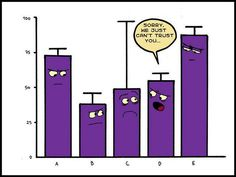

Descriptive statistics form the bedrock of any complex analysis. Descriptive statistics summarize raw data and provide a snapshot of the sample’s features, revealing trends, patterns, and distributions, essential for making the data comprehensible. They provide an initial understanding of data, and an informed context for the application of more complex statistical or machine learning techniques.

As we mentioned in the Introduction- there are many ways to skin a cat in R.
tidyverse() for Describing data
As we learned yesterday- the tidyverse has revolutionised data wrangling and can be extended likewise into the realm of descriptive statistics. Creating tables with dplyr functions summarise() and count() is a useful approach to calculating summary statistics, summarize by group, or pass tables to ggplot() or flextable(). In yesterdays tutorial we briefly did visit this, but we will extend on this in the next 10 minutes or so before transitioning into a simpler more efficient way of describing data in R.
Just to be consistent we what I said yesterday- before diving into the data always always skim the data first to get a quick feels
Show the solution
c19_df %>% skimr::skim()
Data summary
Name
Piped data
Number of rows
37165
Number of columns
15
_______________________
Column type frequency:
character
10
numeric
5
________________________
Group variables
None
Variable type: character
skim_variable
n_missing
complete_rate
min
max
empty
n_unique
whitespace
date
0
1
10
10
0
1013
0
date_announced
0
1
10
10
0
1009
0
date_positive
0
1
10
10
0
1007
0
date_dose1
0
1
0
10
22440
298
0
date_dose2
0
1
0
10
28038
267
0
date_dose3
0
1
0
10
35724
161
0
brand1
0
1
0
16
22440
8
0
brand2
0
1
0
16
28038
7
0
brand3
0
1
0
16
35724
6
0
state
0
1
5
17
0
16
0
Variable type: numeric
skim_variable
n_missing
complete_rate
mean
sd
p0
p25
p50
p75
p100
hist
age
0
1
62.66
16.59
0
51
64
75
130
▁▃▇▃▁
male
0
1
0.58
0.49
0
0
1
1
1
▆▁▁▁▇
bid
0
1
0.21
0.41
0
0
0
0
1
▇▁▁▁▂
malaysian
0
1
0.89
0.31
0
1
1
1
1
▁▁▁▁▇
comorb
0
1
0.79
0.41
0
1
1
1
1
▂▁▁▁▇
Get counts
The most simple function to apply within summarise() is n(). Leave the parentheses empty to count the number of rows. You may have seen this being used several times yesterday. Let
Show the solution
c19_df %>%# begin with linelistsummarise(n_rows =n()) # return new summary dataframe with column n_rows
n_rows
1 37165
Lets try and stratify that by nationality and BID status:
Show the solution
c19_df %>%group_by(malaysian, bid) %>%# group data by unique values in column age_catsummarise(n_rows =n()) # return number of rows *per group*
`summarise()` has grouped output by 'malaysian'. You can override using the
`.groups` argument.
Proportions can be added by piping the table to mutate() to create a new column. Define the new column as the counts column (n by default) divided by the sum() of the counts column (this will return a proportion).
Show the solution
bid_summary <- c19_df %>%count(malaysian, bid) %>%# group and count by gender (produces "n" column)mutate( # create percent of column - note the denominatorpercent =round((n /sum(n))*100,2)) # printbid_summary
Using these structure we can very easily modify these summary statistics using ggplot() or html tables kable() or presentation ready tables using flextable() (flextable is not covered in this course but you can check it out here). An example of a plot is as follows:
Show the solution
c19_df %>%count(malaysian, bid) %>%mutate(percent =round((n /sum(n))*100,2)) %>%ggplot()+# pass new data frame to ggplotgeom_col( # create bar plotmapping =aes( x = malaysian, # map outcome to x-axisfill = bid, # map age_cat to the filly = percent)) # map the counts column `n` to the height
Or a nice little table summary:
Show the solution
c19_df %>%count(malaysian, bid) %>%mutate(malaysian =factor(malaysian,levels=c("0","1"),labels=c("non-Malaysian", "Malaysian")),bid =factor(bid,levels=c("0","1"),labels=c("Hospital", "BID")),) %>%mutate(percent =round((n /sum(n))*100,2))%>% knitr::kable(format="html", caption ="COVID-19 fatalities by Nationality and Place of Death",) %>% kableExtra::kable_minimal()
COVID-19 fatalities by Nationality and Place of Death
malaysian
bid
n
percent
non-Malaysian
Hospital
1958
5.27
non-Malaysian
BID
2077
5.59
Malaysian
Hospital
27297
73.45
Malaysian
BID
5833
15.69
Summary statistics
One major advantage of dplyr and summarise() is the ability to return more advanced statistical summaries like median(), mean(), max(), min(), sd() (standard deviation), and percentiles. You can also use sum() to return the number of rows that meet certain logical criteria. As above, these outputs can be produced for the whole data frame set, or by group.
The syntax is the same - within the summarise() parentheses you provide the names of each new summary column followed by an equals sign and a statistical function to apply. Within the statistical function, give the column(s) to be operated on and any relevant arguments (e.g. na.rm = TRUE for most mathematical functions).
You can also use sum() to return the number of rows that meet a logical criteria. The expression within is counted if it evaluates to TRUE. For example:
sum(age_years < 18, na.rm=T)
sum(gender == "male", na.rm=T)
sum(response %in% c("Likely", "Very Likely"))
Below, c19_df data are summarised to describe the days delay from death to announcement (column days_death_state), by state.
Show the solution
c19_df %>%# begin with linelist, save out as new objectgroup_by(state) %>%# group all calculations by hospitalmutate(across(contains("date"), ~as.Date(., format ="%Y-%m-%d")), #change character to dates\ fromatdays_death_state=date_announced-date) %>%# calculate the delay for each deathsummarise( # only the below summary columns will be returneddeaths =n(), # number of rows per groupdelay_max =max(days_death_state, na.rm = T), # max delaydelay_mean =round(mean(days_death_state, na.rm=T), digits =1), # mean delay, roundeddelay_sd =round(sd(days_death_state, na.rm = T), digits =1), # standard deviation of delays, roundeddelay_3 =sum(days_death_state >=3, na.rm = T), # number of rows with delay of 3 or more dayspct_delay_3 = scales::percent(delay_3 / deaths) # convert previously-defined delay column to percent (scales gives the % sign behind) )
# A tibble: 16 × 7
state deaths delay_max delay_mean delay_sd delay_3 pct_delay_3
<chr> <int> <drtn> <drtn> <dbl> <int> <chr>
1 Johor 4741 253 days 4.8 days 12 1988 42%
2 Kedah 2756 338 days 10.0 days 18.6 1531 56%
3 Kelantan 1428 153 days 7.5 days 12.5 920 64%
4 Melaka 1215 386 days 5.2 days 15 462 38%
5 Negeri Sembilan 1546 274 days 8.7 days 19.5 659 43%
6 Pahang 1037 325 days 5.2 days 19 392 38%
7 Perak 2168 178 days 4.0 days 9.4 1031 48%
8 Perlis 199 16 days 2.5 days 2.4 67 34%
9 Pulau Pinang 2085 396 days 3.7 days 10.9 958 46%
10 Sabah 3212 237 days 4.9 days 8.7 2063 64%
11 Sarawak 1796 167 days 4.6 days 9.7 901 50%
12 Selangor 11028 370 days 17.5 days 23.5 8692 79%
13 Terengganu 905 150 days 3.2 days 7 421 47%
14 W.P. Kuala Lumpur 2861 315 days 11.0 days 21.3 2026 71%
15 W.P. Labuan 159 14 days 1.3 days 1.3 13 8%
16 W.P. Putrajaya 29 388 days 20.9 days 71.6 14 48%
Tip
Use sum() with a logic statement to “count” rows that meet certain criteria (==)
Note the use of na.rm = TRUE within mathematical functions like sum(), otherwise NA will be returned if there are any missing values
Use the function percent() from the scales package to easily convert to percents
Set accuracy = to 0.1 or 0.01 to ensure 1 or 2 decimal places respectively
To calculate these statistics on the entire dataset, use summarise() without group_by()
You may create columns for the purposes of later calculations (e.g. denominators) that you eventually drop from your data frame with select().
Conditional statistics
You may want to return conditional statistics - e.g. the maximum of rows that meet certain criteria. This can be done by subsetting the column with brackets [ ].
# A tibble: 16 × 3
state max_age_msian max_age_non_msian
<chr> <dbl> <dbl>
1 Johor 64 45
2 Kedah 65 45
3 Kelantan 68 58
4 Melaka 64 42
5 Negeri Sembilan 67 45
6 Pahang 65 46
7 Perak 70 46
8 Perlis 71 44
9 Pulau Pinang 70 45
10 Sabah 69 59
11 Sarawak 71 42
12 Selangor 63 47
13 Terengganu 67.5 50
14 W.P. Kuala Lumpur 66 47
15 W.P. Labuan 61 56
16 W.P. Putrajaya 68 NA
Percentiles
Percentiles and quantiles in dplyr deserve a special mention. To return quantiles, use quantile() with the defaults or specify the value(s) you would like with probs =.
Show the solution
# get default percentile values of age (0%, 25%, 50%, 75%, 100%)c19_df %>%summarise(age_percentiles =quantile(age, na.rm =TRUE))
Warning: Returning more (or less) than 1 row per `summarise()` group was deprecated in
dplyr 1.1.0.
ℹ Please use `reframe()` instead.
ℹ When switching from `summarise()` to `reframe()`, remember that `reframe()`
always returns an ungrouped data frame and adjust accordingly.
age_percentiles
1 0
2 51
3 64
4 75
5 130
Or manually defined percentiles that are grouped
Show the solution
# get manually-specified percentile values of age (5%, 50%, 75%, 98%)c19_df %>%group_by(malaysian) %>%summarise(age_percentiles =quantile( age,probs =c(.05, 0.5, 0.75, 0.98), na.rm=TRUE) )
Warning: Returning more (or less) than 1 row per `summarise()` group was deprecated in
dplyr 1.1.0.
ℹ Please use `reframe()` instead.
ℹ When switching from `summarise()` to `reframe()`, remember that `reframe()`
always returns an ungrouped data frame and adjust accordingly.
`summarise()` has grouped output by 'malaysian'. You can override using the
`.groups` argument.
Do keep in mind that there any many ways to skin the cat! And always there will be more efficient ways to do things as you progress through R- Here is an example from the rstatix package
Show the solution
c19_df %>%group_by(malaysian) %>% rstatix::get_summary_stats(age, type ="quantile")
# A tibble: 2 × 8
malaysian variable n `0%` `25%` `50%` `75%` `100%`
<int> <fct> <dbl> <dbl> <dbl> <dbl> <dbl> <dbl>
1 0 age 4035 0 41 48 56 130
2 1 age 33130 0 54 66 76 110
across() multiple columns
You can use summarise() across multiple columns using across(). This makes life easier when you want to calculate the same statistics for many columns. Place across() within summarise() and specify the following:
.cols = as either a vector of column names c() or “tidyselect” helper functions (explained below)
.fns = the function to perform (no parentheses) - you can provide multiple within a list()
Show the solution
c19_df %>%group_by(state) %>%mutate(across(contains("date"), ~as.Date(., format ="%Y-%m-%d")), #change character to dates\ fromatdays_toAnnounce_state=date_announced-date,day_toDeath_state=date-date_positive) %>%summarise(across(.cols =c(day_toDeath_state, days_toAnnounce_state), # columns.fns =list("mean"= mean, "sd"= sd), # multiple functions na.rm=T)) # extra arguments
Warning: There was 1 warning in `summarise()`.
ℹ In argument: `across(...)`.
ℹ In group 1: `state = "Johor"`.
Caused by warning:
! The `...` argument of `across()` is deprecated as of dplyr 1.1.0.
Supply arguments directly to `.fns` through an anonymous function instead.
# Previously
across(a:b, mean, na.rm = TRUE)
# Now
across(a:b, \(x) mean(x, na.rm = TRUE))
# A tibble: 16 × 5
state day_toDeath_state_mean day_toDeath_state_sd days_toAnnounce_stat…¹
<chr> <drtn> <dbl> <drtn>
1 Johor 5.564016 days 9.17 4.826408 days
2 Kedah 6.058418 days 6.43 9.989115 days
3 Kelantan 5.427871 days 6.74 7.468487 days
4 Melaka 7.680658 days 9.28 5.209053 days
5 Negeri Se… 6.683700 days 6.99 8.657827 days
6 Pahang 7.459016 days 13.1 5.176471 days
7 Perak 4.484317 days 7.59 3.975554 days
8 Perlis 6.015075 days 10.0 2.457286 days
9 Pulau Pin… 4.852278 days 4.75 3.738129 days
10 Sabah 5.929016 days 15.8 4.892590 days
11 Sarawak 5.972717 days 9.04 4.566258 days
12 Selangor 7.434168 days 12.1 17.518680 days
13 Terengganu 5.896133 days 6.78 3.240884 days
14 W.P. Kual… 6.166375 days 12.1 11.021671 days
15 W.P. Labu… 6.232704 days 6.47 1.314465 days
16 W.P. Putr… 7.862069 days 7.29 20.896552 days
# ℹ abbreviated name: ¹days_toAnnounce_state_mean
# ℹ 1 more variable: days_toAnnounce_state_sd <dbl>
Here are those “tidyselect” helper functions you can provide to .cols = to select columns:
Descriptives statistics approaches in R are numerous.
I initially heavily utilised dplyr and the janitor (you can find a tutorial here) and tableone (you can find a tutorial here) packages which are both fantastic packages. More recently however, I discovered gtsummary. And lets just say its the bomb! Its my absolutely favourite package for descriptive analysis (and we will explore some of its other powerful extensions later).
If you want to print your summary statistics in a pretty, publication-ready graphic, you can use the gtsummary package and its function tbl_summary(). The code can seem complex at first, but the outputs look very nice and print to your RStudio Viewer panel as an HTML image.
Summary table
The default behavior of tbl_summary() is quite incredible - it takes the columns you provide and creates a summary table in one command. The function prints statistics appropriate to the column class: median and inter-quartile range (IQR) for numeric columns, and counts (%) for categorical columns. Missing values are converted to “Unknown”. Footnotes are added to the bottom to explain the statistics, while the total N is shown at the top.
Show the solution
c19_df %>%select(age, state, male, malaysian, bid) %>%# keep only the columns of interesttbl_summary() # default
Characteristic
N = 37,1651
age
64 (51, 75)
state
Johor
4,741 (13%)
Kedah
2,756 (7.4%)
Kelantan
1,428 (3.8%)
Melaka
1,215 (3.3%)
Negeri Sembilan
1,546 (4.2%)
Pahang
1,037 (2.8%)
Perak
2,168 (5.8%)
Perlis
199 (0.5%)
Pulau Pinang
2,085 (5.6%)
Sabah
3,212 (8.6%)
Sarawak
1,796 (4.8%)
Selangor
11,028 (30%)
Terengganu
905 (2.4%)
W.P. Kuala Lumpur
2,861 (7.7%)
W.P. Labuan
159 (0.4%)
W.P. Putrajaya
29 (<0.1%)
male
21,374 (58%)
malaysian
33,130 (89%)
bid
7,910 (21%)
1 Median (IQR); n (%)
Adjustments
by =
You can stratify your table by a column (e.g. by outcome), creating a 2-way table.
statistic =
Use an equations to specify which statistics to show and how to display them. There are two sides to the equation, separated by a tilde ~. On the right side, in quotes, is the statistical display desired, and on the left are the columns to which that display will apply.
Show the solution
c19_df %>%select(age) %>%# keep only columns of interest tbl_summary( # create summary tablestatistic = age ~"{mean} ({sd})") # print mean of age
Characteristic
N = 37,1651
age
63 (17)
1 Mean (SD)
digits =
Adjust the digits and rounding. Optionally, this can be specified to be for continuous columns only (as below).
label =
Adjust how the column name should be displayed. Provide the column name and its desired label separated by a tilde. The default is the column name.
missing_text =
Adjust how missing values are displayed. The default is “Unknown”.
type =
This is used to adjust how many levels of the statistics are shown. The syntax is similar to statistic = in that you provide an equation with columns on the left and a value on the right. Two common scenarios include:
type = all_categorical() ~ "categorical" Forces dichotomous columns (e.g. fever yes/no) to show all levels instead of only the “yes” row
type = all_continuous() ~ "continuous2" Allows multi-line statistics per variable, as shown in a later section
Show the solution
c19_df %>%mutate(across(contains("date"), ~as.Date(., format ="%Y-%m-%d")), #change character to dates\ fromatdays_delay=date_announced-date,days_admitted=date-date_positive,vaccinated=ifelse(is.na(date_dose2), "unvaccinated", "vaccinated")) %>%select(age, male, malaysian, bid, vaccinated, comorb, days_delay, days_admitted) %>%# keep only columns of interesttbl_summary( by = malaysian, # stratify entire table by outcomestatistic =list(all_continuous() ~"{mean} ({sd})", # stats and format for continuous columnsall_categorical() ~"{n} / {N} ({p}%)"), # stats and format for categorical columnsdigits =all_continuous() ~1, # rounding for continuous columnstype =all_categorical() ~"categorical", # force all categorical levels to displaylabel =list( # display labels for column names malaysian ~"Nationality", age ~"Age (years)", male ~"Gender", bid ~"Brought-in-dead", comorb ~"Comorbids", vaccinated ~"Vaccine status", days_admitted ~"Duration between diagnosis and death (days) ", days_delay ~"Duration between death and announcement (days)"),missing_text ="NA"# how missing values should display )
Characteristic
0, N = 4,0351
1, N = 33,1301
Age (years)
49.5 (14.3)
64.3 (16.1)
Gender
0
1,650 / 4,035 (41%)
14,141 / 33,130 (43%)
1
2,385 / 4,035 (59%)
18,989 / 33,130 (57%)
Brought-in-dead
0
1,958 / 4,035 (49%)
27,297 / 33,130 (82%)
1
2,077 / 4,035 (51%)
5,833 / 33,130 (18%)
Vaccine status
unvaccinated
3,809 / 4,035 (94%)
24,229 / 33,130 (73%)
vaccinated
226 / 4,035 (5.6%)
8,901 / 33,130 (27%)
Comorbids
0
2,175 / 4,035 (54%)
5,718 / 33,130 (17%)
1
1,860 / 4,035 (46%)
27,412 / 33,130 (83%)
Duration between death and announcement (days)
15.0 (19.4)
8.9 (18.2)
Duration between diagnosis and death (days)
4.1 (14.6)
6.6 (10.0)
1 Mean (SD); n / N (%)
Multi-line stats for continuous variables
If you want to print multiple lines of statistics for continuous variables, you can indicate this by setting the type = to “continuous2”. You can combine all of the previously shown elements in one table by choosing which statistics you want to show. To do this you need to tell the function that you want to get a table back by entering the type as “continuous2”. The number of missing values is shown as “Unknown”.
Show the solution
c19_df %>%mutate(across(contains("date"), ~as.Date(., format ="%Y-%m-%d")), #change character to dates\ fromatdays_delay=date_announced-date,days_admitted=date-date_positive) %>%select(age, days_delay, days_admitted) %>%# keep only columns of interesttbl_summary( # create summary tabletype =all_continuous() ~"continuous2", # indicate that you want to print multiple statistics statistic =all_continuous() ~c("{mean} ({sd})", # line 1: mean and SD"{median} ({p25}, {p75})", # line 2: median and IQR"{min}, {max}") # line 3: min and max )
Characteristic
N = 37,165
age
Mean (SD)
63 (17)
Median (IQR)
64 (51, 75)
Range
0, 130
days_delay
Mean (SD)
10 (18)
Median (IQR)
3 (2, 7)
Range
0, 396
days_admitted
Mean (SD)
6 (11)
Median (IQR)
4 (0, 9)
Range
0, 724
Acknowledgements
Material for this lecture was borrowed and adopted from